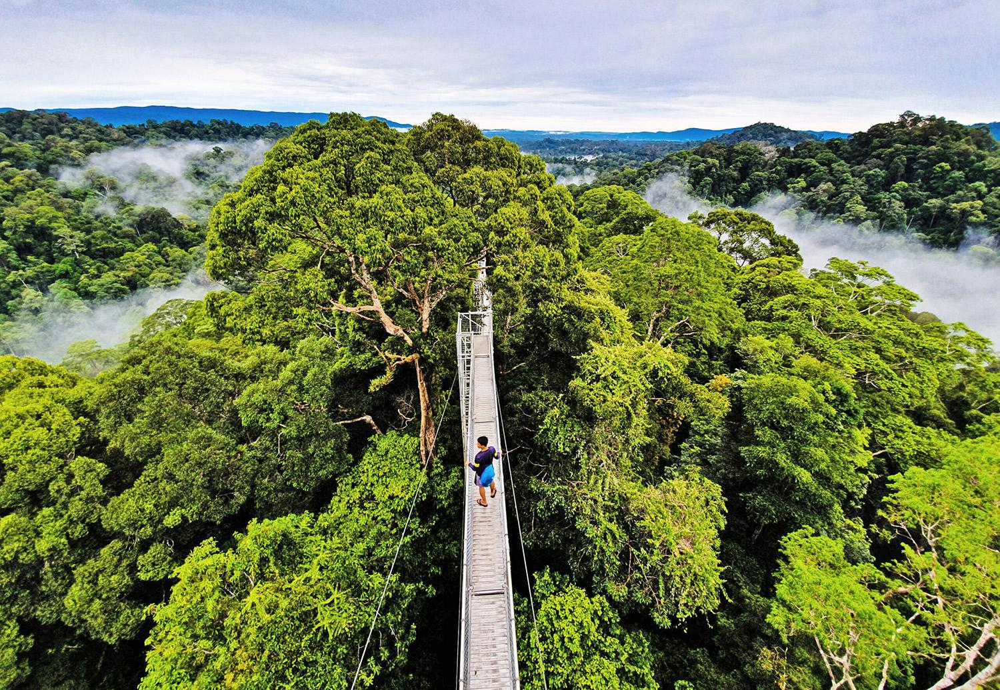
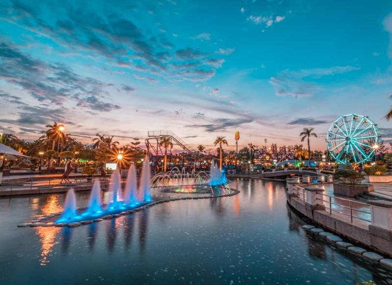
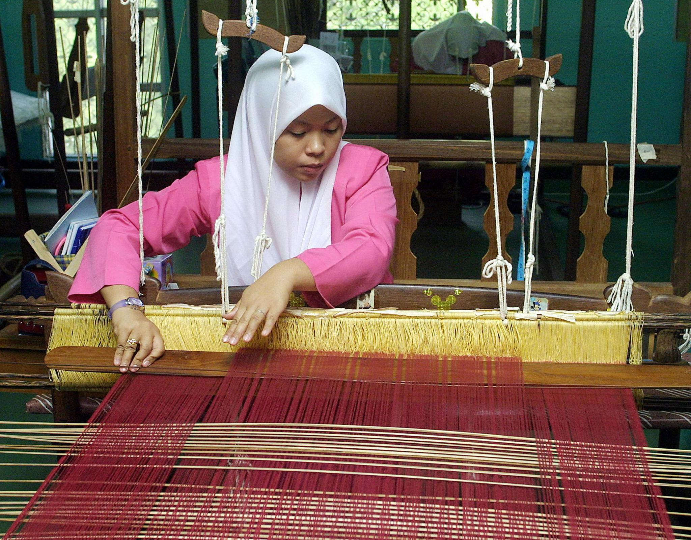
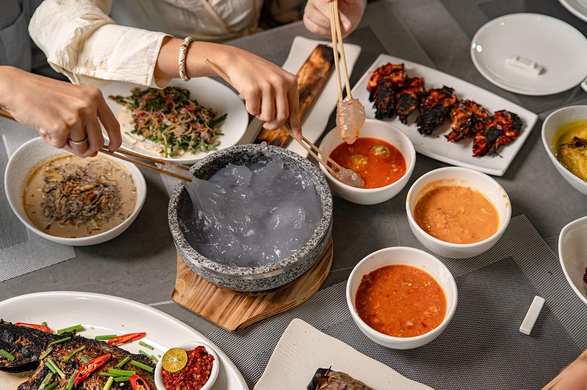
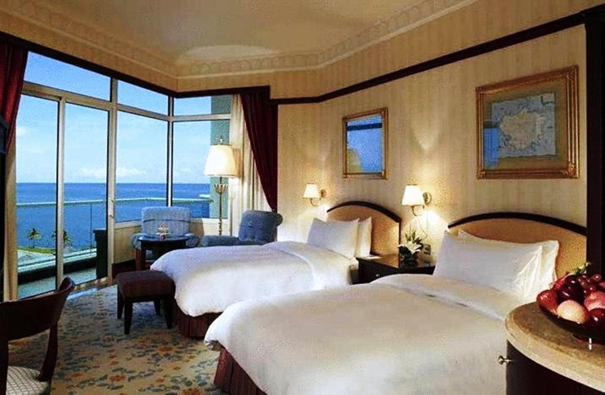
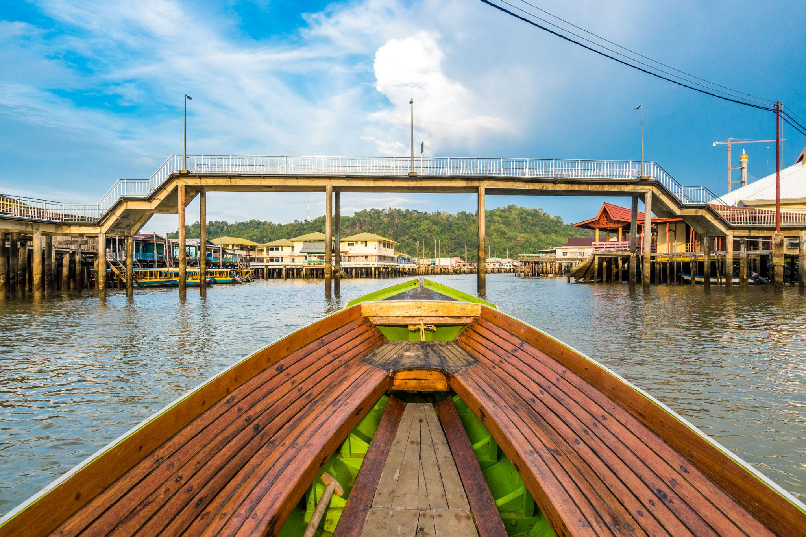

Beyond Brunei
Welcome to Brunei
Explore the beauty, culture and heritage of Brunei Darussalam.
Places to Go

Kampong Ayer
Discover Brunei's historic water village.

Ulu Temburong
Explore the beautiful rainforest of Brunei.

Jerudong Park
Experience Brunei's amusement park.
Culture & Heritage

Royal Regalia
Discover Brunei's royal history and traditions.

Traditional Crafts
Explore the beauty of traditional Bruneian crafts.

Local Cuisine
Experience the unique flavours of Bruneian cuisine.
Plan Your Visit

Getting Here
Find out how to travel to Brunei Darussalam.

Accommodation
Explore comfortable places to stay during your visit.

Getting Around
Discover ways to travel around Brunei.